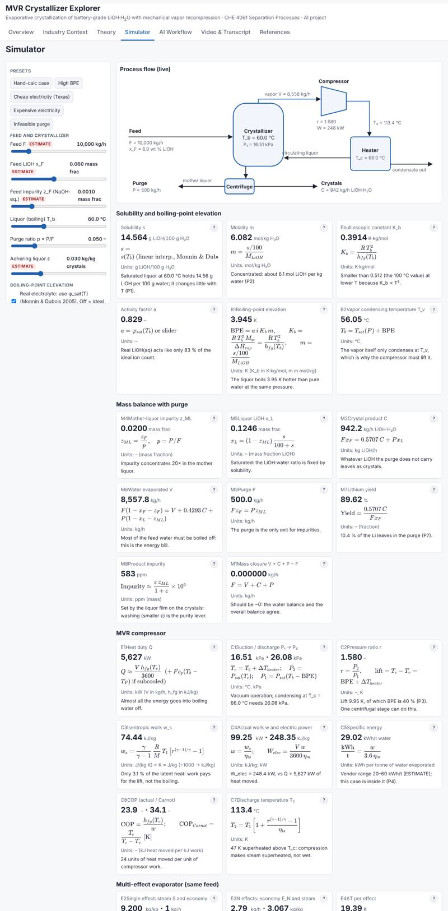
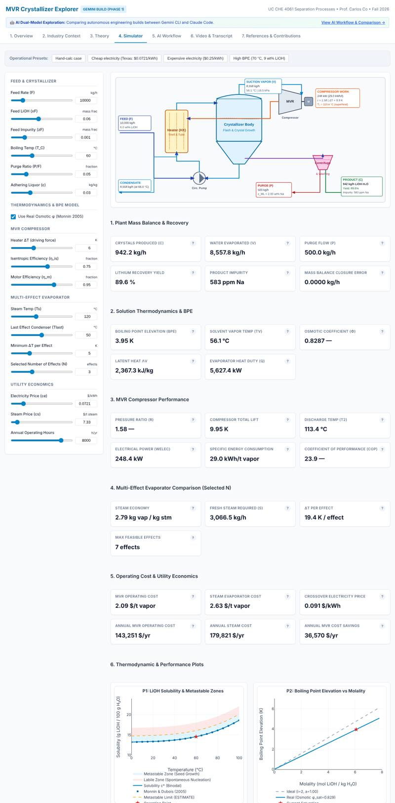

Battery materials Evaporative crystallization
Why crystallize lithium hydroxide with a compressor?
Battery-grade LiOH·H2O is crystallized by boiling water off a purified brine, and boiling is the expensive step. Mechanical vapor recompression (MVR) compresses that vapor so it condenses hotter than the liquor it came from, re-using its own latent heat instead of fresh steam.
Crystallize
Significance
Why battery makers need LiOH·H2O, and where Tesla's Robstown refinery fits.
02Theory
Boiling-point elevation, steam economy, MVR as a heat pump, solubility and supersaturation, the impurity purge.
03Simulator
Move the sliders and compare 1, 3, 5 effects and MVR on the same feed: energy, cost, yield and purity.
An AI project. Planned by one AI model, critiqued by another, built by two different models and compared. See the AI workflow →
Industry context
What LiOH·H2O is for
Lithium hydroxide is the lithium source used for high-nickel cathodes (for example NMC and NCA). It is sold as the crystalline monohydrate, LiOH·H2O, and "battery grade" means tight limits on sodium and other metal impurities.
Tesla's Robstown, TX refinery
Tesla's lithium refinery near Corpus Christi converts spodumene concentrate into battery-grade LiOH·H2O. Reported target: about GWh/yr of battery capacity .
- Spodumene concentrate (a lithium aluminosilicate ore) arrives.
- Kiln: roasting converts it to a leachable form.
- Alkaline leach: lithium goes into solution.
- Purification: calcium, magnesium and other metals are removed.
- Crystallization: water is evaporated until LiOH·H2O crystallizes; the crystals are centrifuged, washed and dried. This site models this step.
How much product? (arithmetic shown)
Units: t LiOH·H2O/yr (GWh × kg/kWh = 106 kg = 1000 t)
The lithium intensity of a battery (kg lithium-carbonate-equivalent per kWh) sets how much hydrate the refinery must crystallize. SOURCE NEEDED for ILCE (IEA Global Critical Minerals Outlook), so no number is shown yet.
Who builds the crystallizers
Veolia is one of the vendors of evaporators and crystallizers for lithium hydroxide; its patent US 10,961,126 B2 describes MVR, thermal vapor recompression and multi-effect options for LiOH evaporators . MVR is reported to hold a 55–60 % share of the industrial evaporator/crystallizer market ESTIMATE (Meticulous Research market estimate; not a primary source).
Which countries and companies dominate lithium refining, and why the US wants domestic refining: SOURCE NEEDED (IEA, USGS Mineral Commodity Summaries). No shares are quoted until sourced.
Operating problems
Foaming
Concentrated caustic liquor can foam. Foam and mist carried up with the vapor put LiOH into the condensate (product loss, corrosive condensate) and send liquid droplets into the compressor suction, which erodes the impeller. Remedies: vapor-space height, demisters, antifoam.
Li2CO3 scaling
LiOH absorbs CO2, and lithium carbonate is far less soluble than the hydroxide, so it deposits on heater tubes. Scale lowers the overall heat-transfer coefficient U, so the same duty needs a larger ΔT, which means more compressor lift and more power .
Theory
Level: Seader, Henley & Roper, Ch. 17 (crystallization, evaporation) plus standard thermodynamics. Every equation shows its units and a one-line "how does that make sense?" interpretation. Live values for the current simulator state are on the Simulator tab.
Evaporation is a single-stage VLE separation
LiOH is non-volatile, so the vapor is pure water. The liquor boils at Tb; the vapor leaves at pressure P and is superheated by BPE above its own condensation temperature Tv = Tsat(P). Removing water raises the LiOH concentration to saturation, and further evaporation produces crystals.
Ideal vs real electrolyte BPE
An ideal (colligative) estimate uses i = 2 ions per LiOH. Real concentrated LiOH(aq) is less "active" than ideal: Monnin & Dubois (2005) give an osmotic coefficient φ ≈ at saturation and 60 °C . With φ the hand-calc BPE is K instead of K (ideal). The simulator has a toggle for both.
Steam economy and multiple effects
In a single effect, 1 kg of steam boils roughly 1 kg of water (E2). Sending each effect's vapor to heat the next re-uses the latent heat N times (E3), but the total temperature difference between the steam and the last condenser is split among the effects, and each effect loses BPE from its driving force (E4). Concentrated brines with large BPE therefore support fewer effects.
MVR as a heat pump; superheat, not wet vapor
The compressor only has to raise the vapor's condensing temperature by the lift = BPE + ΔTheater (~10 K), not supply the latent heat (~2,360 kJ/kg). That is why COP ≈ 20+. Compression of steam superheats it (C7): the discharge is far above its condensing temperature. Liquid enters the compressor only as entrained mist or foam, or deliberately as a desuperheating condensate spray.
Solubility, supersaturation, metastable zone, binodal vs spinodal
The solubility curve c*(T) is the binodal: below it crystals dissolve. Above it the liquor is supersaturated (B4). Just above c* is the metastable zone, where existing crystals grow but new nuclei rarely form. Past the metastable limit, a nucleation shower makes many fines. The spinodal is the thermodynamic limit where the solution is unstable to any fluctuation (no nucleation barrier). The metastable width depends on kinetics (cooling or evaporation rate, agitation, seeds); the spinodal does not. The plot on the Simulator tab draws these bands SCHEMATIC; there are no LiOH data for their widths.
Seeding: adding seed crystals and operating inside the metastable zone makes the dissolved LiOH deposit on existing crystals instead of forming new nuclei, which controls crystal size.
Nucleation vs growth: nucleation creates new crystals; growth enlarges existing ones. High supersaturation favours nucleation (many small crystals); low supersaturation favours growth (fewer, larger crystals).
Why crystal size matters
Too small: slow centrifuging and filtering, more mother liquor left on the crystals (larger ε) → more impurity in the product, and dust. Too large: liquid inclusions trapped inside crystals, breakage, longer residence time. Crystal size is a purity lever through ε (see M8 and the purge plot). Qualitative only; no size data are used.
Impurity purge
Sodium (as NaOH) does not crystallize with LiOH·H2O, so it builds up in the mother liquor until the purge removes it as fast as the feed brings it in (M3). A smaller purge raises lithium yield but concentrates sodium in the liquor (M4), and the liquor film on the crystals then carries more sodium into the product (M8).
Why not cooling crystallization?
LiOH solubility is nearly flat with temperature ( g/100 g water at 20 °C vs at 100 °C ), so cooling recovers only a small fraction (M9). Water must be removed instead.
Simplifications (stated)
- Impurities do not change LiOH solubility. Heat of crystallization neglected. Feed enters at Tb.
- Steam vapor is an ideal gas with γ = 1.33 ESTIMATE. Antoine Psat is within 0.38 % of NIST over 30–110 °C, and the error largely cancels in r.
- Multi-effect economy uses the ideal EN ≈ N·E1 (upper bound). Operating cost only; capital cost is Phase 2.
Glossary
- BPE
- Boiling-point elevation: how much hotter a solution boils than pure water at the same pressure.
- Lift
- Temperature rise the compressor must provide: Tc − Tv = BPE + ΔTheater.
- Steam economy E
- kg water evaporated per kg of fresh steam.
- MVR
- Mechanical vapor recompression: an electrically driven compressor recycles the evaporator's own vapor as heating steam.
- COP
- Coefficient of performance: heat delivered per unit of work.
- Mother liquor
- The saturated solution the crystals grow in.
- Purge ratio p
- Purge flow / feed flow, P/F.
- ε
- Adhering liquor: kg of mother liquor left on each kg of crystals after the centrifuge.
- LCE
- Lithium carbonate equivalent, the industry's unit for lithium quantities.
- Osmotic coefficient φ
- Ratio of the real to the ideal colligative effect of the dissolved ions.
Simulator
Process flow (live)
Click a unit (or Tab to it and press Enter) to see its equations and live values.
Charts
Energy & cost 5
What if? Which uses least fuel and least money per tonne of water?
What if electricity prices change? Above a line (expensive steam), MVR is cheaper; below it, that multi-effect train is cheaper.
Capital: DOE/NETL installed costs (1998) × CEPCI 797.9/389.5; compressor cost is a proxy (ESTIMATE, ±50 %).
Why not just use a tiny ΔT? Try U, electricity price, and interest.
Does the unit still work at part load? With the heater already built, less heat needs less ΔT, so less lift. (No compressor surge map: beyond course level.)
How many effects can this brine support?
BPE & compressor 3
More concentrated liquor? Ideal vs real electrolyte?
How much of the compressor's job is BPE?
Why does BPE hurt MVR?
Purity & mass balance 2
Purity vs yield? Try ε (washing) and the purge ratio.
Where does it go?
Crystallization 2
Cool instead of evaporate?
Where should the liquor operate? Inside the metastable zone, with seeds.
AI Workflow
Workflow
- Plan v1 written by Claude.
- Critiqued by Gemini; each point accepted or rejected with a reason, approved by Andrew.
- Plan v2 (final) merged by Claude.
- Phase 1 built twice from an identical prompt and identical files: Claude Code (this site) and Gemini (/gemini/).
Both builds got the same prompt, plan and data file, in fresh sessions, and were graded by the same tests (written before either build and never shown to the builders). Full write-up with sources: docs/comparison.md. Try the other build: Gemini's site.
Results (Phase 1)
| Metric | Claude (Opus 5.5, Claude Code) | Gemini (3.5-flash → served as 3.8-flash, Gemini CLI on GitHub Actions) |
|---|---|---|
| Hand-calc tests, first run | 9/9 pass | 9/9 pass |
| Independent browser test | 7 tabs, 18 sliders live, 0 failures | 7 tabs, 16 sliders live, 0 failures |
| Fix prompts needed | 0 | 0 |
| Build time | 13 min 9 s (35 turns) | 12 min 23 s (66 tool calls) + 3 min 24 s planning |
| Cost | $3.70 (reported) | ≈ $2.85 (estimated from tokens at list price) |
| Clarifying questions | 0 | 3 (one proposed invented preset prices) |
| Equations shown on the Simulator | 29, on every result card | 0 (all behind “?” buttons) |
| Equations on Theory / Industry | 30 / 1 | 56 / 26 |
| ESTIMATE labels | On every estimated input and result | Few (almost none on sliders) |
| Data honesty | No unsourced numbers; gaps left as “SOURCE NEEDED” | Uncited kiln temperature (1050 °C); false claim that the critique was “approved by course instructor” (Andrew approved it) |
| Code size | ~1,360 lines | ~3,720 lines (2.7×) |
| Level (3rd-year ChemE) | Within level | Within level |
What I found
- Both got the physics right the first time. A detailed plan, exact input names and an independent test made correctness the easy part.
- The differences were in presentation. Claude showed every equation with units and a one-line interpretation on the simulator. Gemini hid them behind buttons but wrote richer Theory and Industry pages.
- Data honesty needed enforcing for Gemini. Its plan proposed invented prices (caught at review), and its site has an uncited temperature and a hallucinated approval claim, left in place here as evidence.
- Instruction-following: on the free tier, told to only plan, Gemini wrote a full build anyway, then ran out of daily quota. That attempt is kept on its own branch.
- The critic needs checking too: Gemini's critique of my plan was right about compressor superheat but wrong on its one “critical” point (an arithmetic slip).
Side by side: Simulator tab (Phase 1, 1280 px)


Gemini's critique of plan v1: my decisions
| # | Gemini suggested | Decision | Why |
|---|---|---|---|
| 1A | Use one Psat method (Antoine) in both builds | Accept fix, reject reasoning | The predicted test failure came from an arithmetic slip, but one method keeps the builds consistent |
| 1B | ε (adhering liquor) is inconsistent with the mass balance | Accept | Made ε a purity-only model |
| 2 | State the enthalpy approximations | Modify | Added the “compressor work shows up as ~3 % surplus heat” check |
| 3 | LiOH's osmotic coefficient makes ideal BPE too high | Verify first | Confirmed from Monnin & Dubois (2005): φ ≈ 0.83, real BPE 3.95 K vs 4.76 K ideal |
| 4 | Show compressor discharge temperature T2 | Accept | Verified ≈ 113–117 °C: compression superheats steam, it isn't wet |
| 5 | Add metastable-zone and spinodal bands; crystal-size card | Modify | Drawn as SCHEMATIC; its crystal-size cutoffs were unsourced, so rejected |
| 6 | Rewrite three interpretations | Accept | Clearer answers to “how does that make sense?” |
| 7a–c | Cut stretch goals; keep Phase 2 small | Accept, but keep a simple turndown | Operating scenarios (turndown) are a standard design question |
| 8a–b | Feasibility guards; exact input names | Accept (modified threshold) | Physical guards instead of an arbitrary cutoff |
| 9–10 | Fairer comparison; fewer tabs | Accept | Same files and fresh sessions for both; 7 tabs |
Full table with reasoning: docs/critique-decisions.md. Caveats: Claude wrote the plan and the tests; the harnesses differ (interactive Claude Code vs headless Gemini CLI); Opus is a top-tier model and Flash a fast-tier one; one build each, no repeats.
Video & Transcript
Transcript (verbatim YouTube auto-transcript)
What I learned / what I want to learn next
References & Contributions
Sources
Every value used, with its source
Generated automatically from js/data.js. ESTIMATE marks values that are engineering estimates, not primary data.
| Value | Number | Units | Source | Note |
|---|
Contributions
| Who | Role |
|---|---|
| Andrew (student) | Topic, guidance and decisions at every step, approval of critique decisions, data verification, presentation. PLACEHOLDER details to be added. |
| Claude (Anthropic), via Claude Code | Plan v1, plan v2 merge, Phase 0 data and test harness, this build (site/). |
| Gemini (Google) | Critique of plan v1; independent Phase 1 build (site/gemini/). |
| Other tools | Plotly 2.35.2 (charts), KaTeX 0.16.11 (equations), Netlify (hosting). PLACEHOLDER |